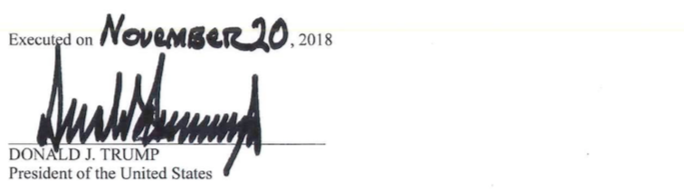

Open Source Edition
of the
Report On The Investigation Into Russian
Interference In The 2016 Presidential
Election
Appendix
Special Counsel Robert S. Mueller, III
Submitted Pursuant to 28 C.F.R. §600.8(c)
Washington, D.C.
March 2019
http://opensourcemuellerreport.com/
(CC) 2019 Ian Dennis Miller
Attribution 3.0 Unported (CC BY 3.0)
Appendix A
ORDER NO. 3915-2017
APPOINTMENT OF SPECIAL COUNSEL
TO INVESTIGATE RUSSIAN INTERFERENCE WITH THE
2016 PRESIDENTIAL ELECTION AND RELATED MATTERS
By virtue of the authority vested in me as Acting Attorney General, including 28 U.S.C. §§ 509, 510, and 515, in order to discharge my responsibility to provide supervision and management of the Department of Justice, and to ensure a full and thorough investigation of the Russian government’s efforts to interfere in the 2016 presidential election, I hereby order as follows:

Appendix B
The following glossary contains names and brief descriptions of individuals and entities referenced in the two volumes of this report. It is not intended to be comprehensive and is intended only to assist a reader in the reading the rest of the report.
|
Agalarov, Aras |
Russian real-estate developer (owner of the Crocus Group); met Donald Trump in connection with the Miss Universe pageant and helped arrange the June 9, 2016 meeting at Trump Tower between Natalia Veselnitskaya and Trump Campaign officials. |
|
Agalarov, Emin |
Performer, executive vice president of Crocus Group, and son of Aras Agalarov; helped arrange the June 9, 2016 meeting at Trump Tower between Natalia Veselnitskaya and Trump Campaign officials. |
|
Akhmetov, Rinat |
Former member in the Ukrainian parliament who hired Paul Manafort to conduct work for Ukrainian political party, the Party of Regions. |
|
Akhmetshin, Rinat |
US. lobbyist and associate of Natalia Veselnitskaya who attended the June 9, 2016 meeting at Trump Tower between Veselnitskaya and Trump Campaign officials. |
|
Aslanovy, Dzheykhun (Jay) |
Head of U.S. department of the Internet Research Agency, which engaged in an “active measures” social media campaign to interfere in the 2016 U.S. presidential election. |
|
Assange, Julian |
Founder of WikiLeaks, which in 2016 posted on the internet documents stolen from entities and individuals affiliated with the Democratic Party. |
|
Aven, Petr |
Chairman of the board of Alfa-Bank who attempted outreach to the Presidential Transition Team in connection with anticipated post-election sanctions. |
|
Bannon, Stephen (Steve) |
White House chief strategist and senior counselor to President Trump (Jan. 2017–Aug. 2017); chief executive of the Trump Campaign. |
|
Baranov, Andrey |
Director of investor relations at Russian state-owned oil company, Rosneft, and associate of Carter Page. |
|
Berkowitz, Avi |
Assistant to Jared Kushner. |
|
Boente, Dana |
Acting Attorney General (Jan. 2017–Feb. 2017); Acting Deputy Attorney General (Feb. 2017–Apr. 2017). |
|
Bogacheva, Anna |
Internet Research Agency employee who worked on “active measures” social media campaign to interfere in in the 2016 U.S. presidential election; traveled to the United States under false pretenses in 2014. |
|
Bossert, Thomas (Tom) |
Former homeland security advisor to the President who also served as a senior official on the Presidential Transition Team. |
|
Boyarkin, Viktor |
Employee of Russian oligarch Oleg Deripaska. |
|
Boyd, Charles |
Chairman of the board of directors at the Center for the National Interest, a U.S.-based think tank with operations in and connections to Russia. |
|
Boyko, Yuriy |
Member of the Ukrainian political party Opposition Bloc and member of the Ukrainian parliament. |
|
Brand, Rachel |
Associate Attorney General (May 2017–Feb. 2018). |
|
Browder, William (Bill) |
Founder of Hermitage Capital Management who lobbied in favor of the Magnitsky Act, which imposed financial and travel sanctions on Russian officials. |
|
Bulatov, Alexander |
Russian intelligence official who associated with Carter Page in 2008. |
|
Burchik, Mikhail |
Executive director of the Internet Research Agency, which engaged in an “active measures” social media campaign to interfere in the 2016 U.S. presidential election. |
|
Burck, William |
Personal attorney to Don McGahn, White House Counsel. |
|
Burnham, James |
Attorney in the White House Counsel’s Office who attended January 2017 meetings between Sally Yates and Donald McGahn. |
|
Burt, Richard |
Former U.S. ambassador who had done work Alfa-Bank and was a board member of the Center for the National Interest. |
|
Bystrov, Mikhail |
General director of the Internet Research Agency, which engaged in an “active measures” social media campaign to interfere in the 2016 U.S. presidential election. |
|
Calamari, Matt |
Chief operating officer for the Trump Organization. |
|
Caputo, Michael |
Trump Campaign advisor. |
|
Chaika, Yuri |
Prosecutor general of the Russian Federation who also maintained a relationship with Aras Agalarov. |
|
Christie, Chris |
Former Governor of New Jersey. |
|
Clapper, James |
Director of National Intelligence (Aug. 2010–Jan. 2017). |
|
Clovis, Samuel Jr. |
Chief policy advisor and national co-chair of the Trump Campaign. |
|
Coats, Dan |
Director of National Intelligence. |
|
Cobb, Ty |
Special Counsel to the President (July 2017–May 2018). |
|
Cohen, Michael |
Former vice president to the Trump Organization and special counsel to Donald Trump who spearheaded an effort to build a Trump-branded property in Moscow. He admitted to lying to Congress about the project. |
|
Comey, James Jr. |
Director of the Federal Bureau of Investigation (Sept. 4, 2013–May 9, 2017). |
|
Conway, Kellyanne |
Counselor to President Trump and manager of the Trump Campaign. |
|
Corallo, Mark |
Spokesman for President Trump’s personal legal team (June 2017–July 2017). |
|
Corsi, Jerome |
Author and political commentator who formerly worked for WorldNetDaily and InfoWars. ________ ___ _____________ __________________ |
|
Costello, Robert |
Attorney who represented he had a close relationship with Rudolph Giuliani, the President’s personal counsel. |
|
Credico, Randolph (Randy) |
Radio talk show host who interviewed Julian Assange in 2016. ________ ___ _____________ ___________________ |
|
Davis, Richard (Rick) Jr. |
Partner with Pegasus Sustainable Century Merchant Bank, business partner of Paul Manafort, and co-founder of the Davis Manafort lobbying firm. |
|
|
|
|
Dearborn, Rick |
Former White House deputy chief of staff for policy who previously served as chief of staff to Senator Jeff Sessions. |
|
Dempsey, Michael |
Office of Director of National Intelligence official who recalled discussions with Dan Coats after Coats’s meeting with President Trump on March 22, 2017. |
|
Denman, Diana |
Delegate to 2016 Republican National Convention who proposed a platform plank amendment that included armed support for Ukraine. |
|
Deripaska, Oleg |
Russian businessman with ties to Vladimir Putin who hired Paul Manafort for consulting work between 2005 and 2009. |
|
Dhillon, Uttam |
Attorney in the White House Counsel’s Office (Jan. 2017–June 2018). |
|
Dmitriev, Kirill |
Head of the Russian Direct Investment Fund (RDIF); met with Erik Prince in the Seychelles in January 2017 and, separately, drafted a U.S.–Russia reconciliation plan with Rick Gerson. |
|
Donaldson, Annie |
Chief of staff to White House Counsel Donald McGahn (Jan. 2017–Dec. 2018). |
|
Dvorkovich, Arkady |
Deputy prime minister of the Russian Federation and chairman of the board of directors of the New Economic School in Moscow. He met with Carter Page twice in 2016. |
|
Dvoskin, Evgeney |
Executive of Genbank in Crimea and associate of Felix Sater. |
|
Eisenberg, John |
Attorney in the White House Counsel’s Office and legal counsel for the National Security Council. |
|
Erchova, Lana (a/k/a Lana Alexander) |
Ex-wife of Dmitry Klokov who emailed Ivanka Trump to introduce Klokov to the Trump Campaign in the fall of 2015. |
|
Fabrizio, Anthony (Tony) |
Partner at the research and consulting firm Fabrizio, Lee & Associates. He was a pollster for the Trump Campaign and worked with Paul Manafort on Ukraine-related polling after the election. |
|
Fishbein, Jason |
Attorney who performed worked for Julian Assange and also sent WikiLeaks a password for an unlaunched website PutinTrump.org on September 20, 2016. |
|
Flynn, Michael G. (a/k/a Michael Flynn Jr.) |
Son of Michael T. Flynn, National Security Advisor (Jan. 20, 2017–Feb. 13, 2017). |
|
Flynn, Michael T. |
National Security Advisor (Jan. 20, 2017–Feb. 13, 2017), Director of the Defense Intelligence Agency (July 2012–Aug. 7, 2014), and Trump Campaign advisor. He pleaded guilty to lying to the FBI about communications with Ambassador Sergey Kislyak in December 2016. |
|
Foresman, Robert (Bob) |
Investment banker who sought meetings with the Trump Campaign in spring 2016 to discuss Russian foreign policy, and after the election met with Michael Flynn. |
|
Futerfas, Alan |
Outside counsel for the Trump Organization and subsequently personal counsel for Donald Trump Jr. |
|
Garten, Alan |
General counsel of the Trump Organization. |
|
Gates, Richard (Rick) III |
Deputy campaign manager for Trump Campaign, Trump Inaugural Committee deputy chairman, and longtime employee of Paul Manafort. He pleaded guilty to conspiring to defraud the United States and violate USS.laws, as well as making false statements to the FBI. |
|
Gerson, Richard (Rick) |
New York hedge fund manager and associate of Jared Kushner. During the transition period, he worked with Kirill Dmitriev on a proposal for reconciliation between the United States and Russia. |
|
|
|
|
Gistaro, Edward |
Deputy Director of National Intelligence for Intelligence Integration. |
|
Glassner, Michael |
Political director of the Trump Campaign who helped introduce George Papadopoulos to others in the Trump Campaign. |
|
Goldstone, Robert |
Publicist for Emin Agalarov who contacted Donald Trump Jr. to arrange the June 9, 2016 meeting at Trump Tower between Natalia Veselnitskaya and Trump Campaign officials. |
|
Gordon, Jeffrey (J.D.) |
National security advisor to the Trump Campaign involved in changes to the Republican party platform and who communicated with Russian Ambassador Sergey Kislyak at the Republican National Convention. |
|
Gorkov, Sergey |
Chairman of Vnesheconombank (VEB), a Russian state-owned bank, who met with Jared Kushner during the transition period. |
|
Graff, Rhona |
Senior vice-president and executive assistant to Donald J. Trump at the Trump Organization. |
|
______ __ ________ ____________ |
_____ __ _______ _____________ |
|
Hawker, Jonathan |
Public relations consultant at FTI Consulting; worked with Davis Manafort International LLC on public relations campaign in Ukraine. |
|
Heilbrunn, Jacob |
Editor of the National Interest, the periodical that officially hosted candidate Trump’s April 2016 foreign policy speech. |
|
Hicks, Hope |
White House communications director (Aug. 2017–Mar. 2018) and press secretary for the Trump Campaign. |
|
Holt, Lester |
NBC News anchor who interviewed President Trump on May 11, 2017. |
|
Hunt, Jody |
Chief of staff to Attorney General Jeff Sessions (Feb. 2017–Oct. 2017). |
|
Ivanov, Igor |
President of the Russian International Affairs Council and former Russian foreign minister. Ivan Timofeev told George Papadopoulos that Ivanoy advised on arranging a “Moscow visit” for the Trump Campaign. |
|
Ivanov, Sergei |
Special representative of Vladimir Putin, former Russian deputy prime minister, and former FSB deputy director. In January 2016, Michael Cohen emailed the Kremlin requesting to speak to Ivanov. |
|
Kasowitz, Marc |
President Trump’s personal counsel (May 2017–July 2017). |
|
Katsyv, Denis |
Son of Peter Katsyv; owner of Russian company Prevezon Holdings Ltd. and associate of Natalia Veselnitskaya. |
|
Katsyv, Peter |
Russian businessman and father of Denis Katsyv. |
|
______ __ ________ ____________ |
_____ __ _______ _____________ |
|
Kaveladze, Irakli (Ike) |
Vice president at Crocus Group and Aras Agalarov’s deputy in the United States. He participated in the June 9, 2016 meeting at Trump Tower between Natalia Veselnitskaya and Trump Campaign officials. |
|
Kaverzina, Irina |
Employee of the Internet Research Agency, which engaged in an “active measures” social media campaign to interfere in the 2016 U.S. presidential election. |
|
|
|
|
Kelly, John |
White House chief of staff (July 2017–Jan. 2019). |
|
Khalilzad, Zalmay |
U.S. special representative to Afghanistan and former U.S. ambassador. He met with Senator Jeff Sessions during foreign policy dinners put together through the Center for the National Interest. |
|
Kilimnik, Konstantin |
Russian-Ukrainian political consultant and long-time employee of Paul Manafort assessed by the FBI to have ties to Russian intelligence. |
|
Kislyak, Sergey |
Former Russian ambassador to the United States and current Russian senator from Mordovia. |
|
Klimentov, Denis |
Employee of the New Economic School who informed high-ranking Russian government officials of Carter Page’s July 2016 visit to Moscow. |
|
Klimentov, Dmitri |
Brother of Denis Klimentov who contacted Kremlin press secretary Dmitri Peskov about Carter Page’s July 2016 visit to Moscow. |
|
Klokov, Dmitry |
Executive for PJSC Federal Grid Company of Unified Energy System and former aide to Russia’s minister of energy. He communicated with Michael Cohen about a possible meeting between Vladimir Putin and candidate Trump. |
|
Kobyakov, Anton |
Advisor to Vladimir Putin and member of the Roscongress Foundation who invited candidate Trump to the St. Petersburg International Economic Forum. |
|
Krickovic, Andrej |
Professor at the Higher School of Economics who recommended that Carter Page give a July 2016 commencement address in Moscow. |
|
Krylova, Aleksandra |
Internet Research Agency employee who worked on “active measures” social media campaign to interfere in the 2016 U.S. presidential election; traveled to the United States under false pretenses in 2014. |
|
Kushner, Jared |
President Trump’s son-in-law and senior advisor to the President. |
|
Kuznetsov, Sergey |
Russian government official at the Russian Embassy to the United States who transmitted Vladimir Putin’s congratulations to President-Elect Trump for his electoral victory on November 9, 2016. |
|
Landrum, Pete |
Advisor to Senator Jeff Sessions who attended the September 2016 meeting between Sessions and Russian Ambassador Sergey Kislyak. |
|
Lavrov, Sergey |
Russian minister of foreign affairs and former permanent representative of Russia to the United Nations. |
|
Ledeen, Barbara |
Senate staffer and associate of Michael Flynn who sought to obtain Hillary Clinton emails during the 2016 U.S. presidential campaign period. |
|
Ledeen, Michael |
Member of the Presidential Transition Team who advised on foreign policy and national security matters. |
|
Ledgett, Richard |
Deputy director of the National Security Agency (Jan. 2014–Apr. 2017); present when President Trump called Michael Rogers on March 26, 2017. |
|
Lewandowski, Corey |
Campaign manager for the Trump Campaign (Jan. 2015–June 2016). |
|
Luff, Sandra |
Legislative director for Senator Jeff Sessions; attended a September 2016 meeting between Sessions and Russian Ambassador Sergey Kislyak. |
|
Lyovochkin, Serhiy |
Member of Ukrainian parliament and member of Ukrainian political party, Opposition Bloc Party. |
|
|
|
|
Magnitsky, Sergei |
Russian tax specialist who alleged Russian government corruption and died in Russian police custody in 2009. His death prompted passage of the Magnitsky Act, which imposed financial and travel sanctions on Russian officials. |
|
Malloch, Theodore (Ted) |
Chief executive officer of Global Fiduciary Governance and the Roosevelt Group. He was a London-based associate of Jerome Corsi. |
|
Manafort, Paul Jr. |
Trump campaign member (March 2016–Aug. 2016) and chairman and chief strategist (May 2016–Aug. 2016). |
|
Mashburn, John |
Trump administration official and former policy director to the Trump Campaign. |
|
McCabe, Andrew |
Acting director of the FBI (May 2017–Aug. 2017); deputy director of the FBI (Feb. 2016–Jan. 2018). |
|
McCord, Mary |
Acting Assistant Attorney General (Oct. 2016–May 2017). |
|
McFarland, Kathleen (K.T.) |
Deputy White House National Security Advisor (Jan. 2017–May 2017). |
|
McGahn, Donald (Don) |
White House Counsel (Jan. 2017–Oct. 2018). |
|
Medvedev, Dmitry |
Prime Minister of Russia. |
|
Melnik, Yuriy |
Spokesperson for the Russian Embassy in Washington, D.C., who connected with George Papadopoulos on social media. |
|
Mifsud, Joseph |
Maltese national and former London-based professor who, immediately after returning from Moscow in April 2016, told George Papadopoulos that the Russians had “dirt” in the form of thousands of Clinton emails. |
|
Miller, Matt |
Trump Campaign staff member who was present at the meeting of the National Security and Defense Platform Subcommittee in July 2016. |
|
Miller, Stephen |
Senior advisor to the President. |
|
Millian, Sergei |
Founder of the Russian American Chamber of Commerce who met with George Papadopoulos during the campaign. |
|
Mnuchin, Steven |
Secretary of the Treasury. |
|
______ __ ________ ____________ |
_____ __ _______ _____________ |
|
Müller-Maguhn, Andrew |
Member of hacker association Chaos Computer Club and associate of Julian Assange, founder of WikiLeaks. |
|
Nader, George |
Advisor to the United Arab Emirates’s Crown Prince who arranged a meeting between Kirill Dmitriev and Erik Prince during the transition period. |
|
Netyksho, Viktor |
Russian military officer in command of a unit involved in Russian hack-and-release operations to interfere in the 2016 U.S. presidential election. |
|
Oganov, Georgiy |
Advisor to Oleg Deripaska and a board member of investment company Basic Element. He met with Paul Manafort in Spain in early 2017. |
|
|
|
|
Oknyansky, Henry (a/k/a Henry Greenberg) |
Florida-based Russian individual who claimed to have derogatory information pertaining to Hillary Clinton. He met with Roger Stone in May 2016. |
|
Page, Carter |
Foreign policy advisor to the Trump Campaign who advocated pro-Russian views and made July 2016 and December 2016 visits to Moscow. |
|
Papadopoulos, George |
Foreign policy advisor to the Trump Campaign who received information from Joseph Mifsud that Russians had “dirt” in the form of thousands of Clinton emails. He pleaded guilty to lying to the FBI about his contact with Mifsud. |
|
Parscale, Bradley |
Digital media director for the 2016 Trump Campaign. |
|
Patten, William (Sam) Jr. |
Lobbyist and business partner of Konstantin Kilimnik. |
|
Peskov, Dmitry |
Deputy chief of staff of and press secretary for the Russian presidential administration. |
|
Phares, Walid |
Foreign policy advisor to the Trump Campaign and co-secretary general of the Transatlantic Parliamentary Group on Counterterrorism (TAG). |
|
Pinedo, Richard |
U.S. person who pleaded guilty to a single-count information of identity fraud. |
|
Podesta, John Jr. |
Clinton campaign chairman whose email account was hacked by the GRU. WikiLeaks released his stolen emails during the 2016 campaign. |
|
Podobnyy, Victor |
Russian intelligence officer who interacted with Carter Page while operating inside the United States; later charged in 2015 with conspiring to act as an unregistered agent of Russia. |
|
Poliakova, Elena |
Personal assistant to Dmitry Peskov who responded to Michael Cohen’s outreach about the Trump Tower Moscow project in January 2016. |
|
Polonskaya, Olga |
Russian national introduced to George Papadopoulos by Joseph Mifsud as an individual with connections to Vladimir Putin. |
|
Pompeo, Michael |
U.S. Secretary of State; director of the Central Intelligence Agency (Jan. 2017–Apr. 2018). |
|
Porter, Robert |
White House staff secretary (Jan. 2017–Feb. 2018). |
|
Priebus, Reince |
White House chief of staff (Jan. 2017–July 2017); chair of the Republican National Committee (Jan. 2011–Jan. 2017). |
|
Prigozhin, Yevgeniy |
Head of Russian companies Concord Catering and Concord Management and Consulting; supported and financed the Internet Research Agency, which engaged in an “active measures” social media campaign to interfere in the 2016 U.S. presidential election. |
|
Prikhodko, Sergei |
First deputy head of the Russian Government Office and former Russian deputy prime minister. In January 2016, he invited candidate Trump to the St. Petersburg International Economic Forum. |
|
Prince, Erik |
Businessman and Trump Campaign supporter who met with Presidential Transition Team officials after the election and traveled to the Seychelles to meet with Kirill Dmitriev in January 2017. |
|
Raffel, Josh |
White House communications advisor (Apr. 2017–Feb. 2018). |
|
Rasin, Alexei |
Ukrainian associate of Henry Oknyansky who claimed to possess derogatory information regarding Hillary Clinton. |
|
|
|
|
Rogers, Michael |
Director of the National Security Agency (Apr. 2014–May 2018). |
|
Rosenstein, Rod |
Deputy Attorney General (Apr. 2017–present); Acting Attorney General for the Russian election interference investigation (May 2017–Nov. 2018). |
|
Rozoy, Andrei |
Chairman of LC. Expert Investment Company, a Russian real-estate development corporation that signed letter of intent for the Trump Tower Moscow project in 2015. |
|
Rtskhiladze, Giorgi |
Executive of the Silk Road Transatlantic Alliance, LLC who communicated with Cohen about a Trump Tower Moscow proposal. |
|
Ruddy, Christopher |
Chief executive of Newsmax Media and associate of President Trump. |
|
Rybicki, James |
FBI chief of staff (May 2015–Feb. 2018). |
|
Samochornov, Anatoli |
Translator who worked with Natalia Veselnitskaya and attended a June 9, 2016 meeting at Trump Tower between Veselnitskaya and Trump Campaign officials. |
|
Sanders, Sarah Huckabee |
White House press secretary (July 2017–present). |
|
Sater, Felix |
Real-estate advisor who worked with Michael Cohen to pursue a Trump Tower Moscow project. |
|
Saunders, Paul J. |
Executive with the Center for the National Interest who worked on outlines and logistics of candidate Trump’s April 2016 foreign policy speech. |
|
Sechin, Igor |
Executive chairman of Rosneft, a Russian-stated owned oil company. |
|
Sessions, Jefferson III (Jeff) |
Attorney General (Feb. 2017–Nov. 2018); U.S. Senator (Jan. 1997–Feb. 2017); head of the Trump Campaign’s foreign policy advisory team. |
|
Shoygu, Sergey |
Russian Minister of Defense. |
|
Simes, Dimitri |
President and chief executive officer of the Center for the National Interest. |
|
Smith, Peter |
Investment banker active in Republican politics who sought to obtain Hillary Clinton emails during the 2016 U.S. presidential campaign period. |
|
Spicer, Sean |
White House press secretary and communications director (Jan. 2017–July 2017). |
|
Stone, Roger |
Advisor to the Trump Campaign ________ ___ _____________ __________________ |
|
Tillerson, Rex |
U.S. Secretary of State (Feb. 2017–Mar. 2018). |
|
Timofeev, Ivan |
Director of program sat the Russian International Affairs Council and program director of the Valdai Discussion Club who communicated in 2016 with George Papadopoulos, attempting to arrange a meeting between the Russian government and the Trump Campaign. |
|
Trump, Donald Jr. |
President Trump’s son; trustee and executive vice president of the Trump Organization; helped arrange and attended the June 9, 2016 meeting at Trump Tower between Natalia Veselnitskaya and Trump Campaign officials. |
|
|
|
|
Trump, Eric |
President Trump’s son; trustee and executive vice president of the Trump Organization. |
|
Trump, Ivanka |
President Trump’s daughter; advisor to the President and former executive vice president of the Trump Organization. |
|
Ushakov, Yuri Viktorovich |
Aide to Vladimir Putin and former Russian ambassador to the United States; identified to the Presidential Transition Team as the proposed channel to the Russian government. |
|
Vaino, Anton |
Chief of staff to Russian president Vladimir Putin. |
|
Van der Zwaan, Alexander |
Former attorney at Skadden, Arps, Slate, Meagher & Flom, LLP; worked with Paul Manafort and Rick Gates. |
|
Vargas, Catherine |
Executive assistant to Jared Kushner. |
|
Vasilchenko, Gleb |
Internet Research Agency employee who engaged in an “active measures” social media campaign to interfere in the 2016 U.S. presidential election. |
|
Veselnitskaya, Natalia |
Russian attorney who advocated for the repeal of the Magnitsky Act and was the principal speaker at the June 9, 2016 meeting at Trump Tower with Trump Campaign officials. |
|
Weber, Shlomo |
Rector of the New Economic School (NES) in Moscow who invited Carter Page to speak at NES commencement in July 2016. |
|
Yanukovych, Viktor |
Former president of Ukraine who had worked with Paul Manafort. |
|
Yates, Sally |
Acting Attorney General (Jan. 20, 2017–Jan. 30, 2017); Deputy Attorney General (Jan. 10, 2015–Jan. 30, 2017). |
|
Yatsenko, Sergey |
Deputy chief financial officer of Gazprom, a Russian state-owned energy company, and associate of Carter Page. |
|
Zakharova, Maria |
Director of the Russian Ministry of Foreign Affair’s Information and Press Department who received notification of Carter Page’s speech in July 2016 from Denis Klimentov. |
|
Zayed al Nahyan, Mohammed bin |
Crown Prince of Abu Dhabi and deputy supreme commander of the United Arab Emirates (UAE) armed forces. |
|
|
|
|
|
|
|
|
|
Alfa-Bank |
Russia’s largest commercial bank, which is headed by Petr Aven. |
|
Center for the National Interest (CNI) |
U.S.-based think tank with expertise in and connections to Russia. CNI’s publication, the National Interest, hosted candidate Trump’s foreign policy speech in April 2016. |
|
Concord |
Umbrella term for Concord Management and Consulting, LLC and Concord Catering, which are Russian companies controlled by Yevgeniy Prigozhin. |
|
Crocus Group or Crocus International |
A Russian real-estate and property development company that, in 2013, hosted the Miss Universe Pageant, and from 2013 through 2014, worked with the Trump Organization on a Trump Moscow project. |
|
DCLeaks |
Fictitious online persona operated by the GRU that released stolen documents during the 2016 U.S. presidential campaign period. |
|
Democratic Congressional Campaign Committee |
Political committee working to elect Democrats to the House of Representatives; hacked by the GRU in April 2016. |
|
Democratic National Committee |
Formal governing body for the Democratic Party; hacked by the GRU in April 2016. |
|
Duma |
Lower House of the national legislature of the Russian Federation. |
|
Gazprom |
Russian oil and gas company majority-owned by the Russian government. |
|
Global Energy Capital, LLC |
Investment and management firm founded by Carter Page. |
|
Global Partners in Diplomacy |
Event hosted in partnership with the U.S. Department of State and the Republican National Convention. In 2016, Jeff Sessions and J.D. Gordon delivered speeches at the event and interacted with Russian Ambassador Sergey Kislyak. |
|
Guccifer 2.0 |
Fictitious online persona operated by the GRU that released stolen documents during the 2016 U.S. presidential campaign period. |
|
I.C. Expert Investment Company |
Russian real-estate and development corporation that signed a letter of intent with a Trump Organization subsidiary to develop a Trump Moscow property. |
|
Internet Research Agency (IRA) |
Russian entity based in Saint Petersburg and funded by Concord that engaged in an “active measures” social media campaign to interfere in the 2016 U.S. presidential election. |
|
KLS Research LLC |
Business established by an associate of and at the direction of Peter Smith to further Smith’s search for Hillary Clinton emails. |
|
Kremlin |
Official residence of the president of the Russian Federation; it is used colloquially to refer to the office of the president or the Russian government. |
|
LetterOne |
Company that includes Petr Aven and Richard Burt as board members. During a board meeting in December 2016, Aven asked for Burt’s help to make contact with the Presidential Transition Team. |
|
Link Campus University |
University in Rome, Italy, where George Papadopoulos was introduced to Joseph Mifsud. |
|
London Centre of International Law Practice (LCILP) |
International law advisory organization in London that employed Joseph Mifsud and George Papadopoulos. |
|
Main Intelligence Directorate of the General Staff (GRU) |
Russian Federation’s military intelligence agency. |
|
New Economic School in Moscow (NES) |
Moscow-based school that invited Carter Page to speak at its July 2016 commencement ceremony. |
|
Opposition Bloc |
Ukrainian political party that incorporated members of the defunct Party of Regions. |
|
Party of Regions |
Ukrainian political party of former President Yanukovych. It was generally understood to align with Russian policies. |
|
Pericles Emerging Market Partners LLP |
Company registered in the Cayman Islands by Paul Manafort and his business partner Rick Davis. Oleg Deripaska invested in the fund. |
|
Prevezon Holdings Ltd. |
Russian company that was a defendant in a U.S. civil action alleging the laundering of proceeds from fraud exposed by Sergei Magnitsky. |
|
Roscongress Foundation |
Russian entity that organized the St. Petersburg International Economic Forum. |
|
Rosneft |
Russian state-owned oil and energy company. |
|
Russian Direct Investment Fund |
Sovereign wealth fund established by the Russian Government in 2011 and headed by Kirill Dmitriev. |
|
Russian International Affairs Council |
Russia-based nonprofit established by Russian government decree. It is associated with the Ministry of Foreign Affairs, and its members include Ivan Timofeev, Dmitry Peskov, and Petr Aven. |
|
Silk Road Group |
Privately held investment company that entered into a licensing agreement to build a Trump-branded hotel in Georgia. |
|
St. Petersburg International Economic Forum |
Annual event held in Russia and attended by prominent Russian politicians and businessmen. |
|
Tatneft |
Russian energy company. |
|
Transatlantic Parliamentary Group on Counterterrorism |
European group that sponsored a summit between European Parliament lawmakers and U.S. persons. George Papadopoulos, Sam Clovis, and Walid Phares attended the TAG summit in July 2016. |
|
Unit 26165 (GRU) |
GRU military cyber unit dedicated to targeting military, political, governmental, and non-governmental organizations outside of Russia. It engaged in computer intrusions of U.S. persons and organizations, as well as the subsequent release of the stolen data, in order to interfere in the 2016 U.S. presidential election. |
|
Unit 74455 (GRU) |
GRU military unit with multiple departments that engaged in cyber operations. It engaged in computer intrusions of U.S. persons and organizations, as well as the subsequent release of the stolen data, in order to interfere in the 2016 U.S. presidential election. |
|
Valdai Discussion Club |
Group that holds a conference attended by Russian government officials, including President Putin. |
|
WikiLeaks |
Organization founded by Julian Assange that posts information online, including data stolen from private, corporate, and U.S. Government entities, Released data stolen by the GRU during the 2016 U.S. presidential election. |
|
|
|
|
|
|
|
|
|
CNI |
Center for the National Interest |
|
DCCC |
Democratic Congressional Campaign Committee |
|
DNC |
Democratic National Committee |
|
FBI |
Federal Bureau of Investigation |
|
FSB |
Russian Federal Security Service |
|
GEC |
Global Energy Capital, LLC |
|
GRU |
Russian Federation’s Main Intelligence Directorate of the General Staff |
|
HPSCI |
U.S. House of Representatives Permanent Select Committee on Intelligence |
|
HRC |
Hillary Rodham Clinton |
|
TRA |
Internet Research Agency |
|
LCILP |
London Centre of International Law Practice |
|
NATO |
North Atlantic Treaty Organization |
|
NES |
New Economic School |
|
NSA |
National Security Agency |
|
ODNI |
Office of the Director of National Intelligence |
|
PTT |
Presidential Transition Team |
|
RDIF |
Russian Direct Investment Fund |
|
RIAC |
Russian International Affairs Council |
|
SBOE |
State boards of elections |
|
SCO |
Special Counsel’s Office |
|
SIC |
U.S. Senate Judiciary Committee |
|
SSCI |
U.S. Senate Select Committee on Intelligence |
|
TAG |
Transatlantic Parliamentary Group on Counterterrorism |
|
VEB |
Vnesheconombank |
|
|
|
|
|
|
|
|
Appendix C
The President provided written responses through his personal counsel to questions submitted to him by the Special Counsel’s Office. We first explain the process that led to the submission of written questions and then attach the President’s responses.
Beginning in December 2017, this Office sought for more than a year to interview the President on topics relevant to both Russian-election interference and obstruction-of-justice. We advised counsel that the President was a “subject” of the investigation under the definition of the Justice Manual—“a person whose conduct is within the scope of the grand jury’s investigation.” Justice Manual § 9-11.151 (2018). We also advised counsel that “[a]n interview with the President is vital to our investigation” and that this Office had “carefully considered the constitutional and other arguments raised by … counsel, and they d[id] not provide us with reason to forgo seeking an interview.”1 We additionally stated that “it is in the interest of the Presidency and the public for an interview to take place” and offered “numerous accommodations to aid the President’s preparation and avoid surprise.”2 After extensive discussions with the Department of Justice about the Special Counsel’s objective of securing the President’s testimony, these accommodations included the submissions of written questions to the President on certain Russia-related topics.3
We received the President’s written responses in late November 2018.4 In December 2018, we informed counsel of the insufficiency of those responses in several respects.5 We noted, among other things, that the President stated on more than 30 occasions that he “does not ‘recall’ or ‘remember’ or have an ‘independent recollection’” of information called for by the questions.6 Other answers were “incomplete or imprecise.”7 The written responses, we informed counsel, “demonstrate the inadequacy of the written format, as we have had no opportunity to ask follow-up questions that would ensure complete answers and potentially refresh your client’s recollection or clarify the extent or nature of his lack of recollection.”8 We again requested an in-person interview, limited to certain topics, advising the President’s counsel that “[t]his is the President’s opportunity to voluntarily provide us with information for us to evaluate in the context of all of the evidence we have gathered.”9 The President declined.10
_______ _____11 ______ _____12
Recognizing that the President would not be interviewed voluntarily, we considered whether to issue a subpoena for his testimony. We viewed the written answers to be inadequate. But at that point, our investigation had made significant progress and had produced substantial evidence for our report. We thus weighed the costs of potentially lengthy constitutional litigation, with resulting delay in finishing our investigation, against the anticipated benefits for our investigation and report. As explained in Volume II, Section II.B., we determined that the substantial quantity of information we had obtained from other sources allowed us to draw relevant factual conclusions on intent and credibility, which are often inferred from circumstantial evidence and assessed without direct testimony from the subject of the investigation.
Response to Question I, Parts (a) through (c) I have no recollection of learning at the time that Donald Trump, Jr., Paul Manafort, or Jared Kushner was considering participating in a meeting in June 2016 concerning potentially negative information about Hillary Clinton. Nor do I recall learning during the campaign that the June 9, 2016 meeting had taken place, that the referenced emails existed, or that Donald J. Trump, Jr., had other communications with Emin Agalarov or Robert Goldstone between June 3, 2016 and June 9, 2016.
Response to Question I, Part (d) I have no independent recollection of what portion of these four days in June of 2016 I spent in Trump Tower. This was one of many busy months during a fast-paced campaign, as the primary season was ending and we were preparing for the general election campaign.
I am now aware that my Campaign’s calendar indicates that I was in New York City from June 6–9, 2016. Calendars kept in my Trump Tower office reflect that I had various calls and meetings scheduled for each of these days. While those calls and meetings may or may not actually have taken place, they do indicate that I was in Trump Tower during a portion of each of these working days, and I have no reason to doubt that I was. When I was in New York City, I stayed at my Trump Tower apartment.
My Trump Organization desk calendar also reflects that I was outside Trump Tower during portions of these days. The June 7, 2016 calendar indicates I was scheduled to leave Trump Tower in the early evening for Westchester where I gave remarks after winning the California, New Jersey, New Mexico, Montana, and South Dakota Republican primaries held that day. The June 8, 2016 calendar indicates a scheduled departure in late afternoon to attend a ceremony at my son’s school. The June 9, 2016 calendar indicates I was scheduled to attend midday meetings and a fund raising luncheon at the Four Seasons Hotel. At this point, I do not remember on what dates these events occurred, but I do not currently have a reason to doubt that they took place as scheduled on my calendar.
Widely available media reports, including television footage, also shed light on my activities during these days. For example, I am aware that my June 7, 2016 victory remarks at the Trump National Golf Club in Briarcliff Manor, New York, were recorded and published by the media. I remember winning those primaries and generally recall delivering remarks that evening.
At this point in time, I do not remember whether I spoke or met with Donald Trump, Jr., Paul Manafort, or Jared Kushner on June 9, 2016. My desk calendar indicates I was scheduled to meet with Paul Manafort on the morning of June 9, but I do not recall if that meeting took place. It was more than two years ago, at a time when I had many calls and interactions daily.
Response to Question I, Part (e) I have no independent recollection of any communications I had with the Agalarov family or anyone I understood to be a representative of the Agalarov family after June 3, 2016 and before the end of the campaign. While preparing to respond to these questions, I have become aware of written communications with the Agalarovs during the campaign that were sent, received, and largely authored by my staff and which I understand have already been produced to you.
In general, the documents include congratulatory letters on my campaign victories, emails about a painting Emin and Aras Agalarov arranged to have delivered to Trump Tower as a birthday present, and emails regarding delivery of a book written by Aras Agalarov. The documents reflect that the deliveries were screened by the Secret Service.
Response to Question I, Part (f) I do not recall being aware during the campaign of communications between Donald Trump, Jr., Paul Manafort, or Jared Kushner and any member or representative of the Agalarov family, Robert Goldstone, Natalia Veselnitskaya (whose name I was not familiar with), or anyone I understood to be a Russian official.
Response to Question I, Part (g) In remarks I delivered the night I won the California, New Jersey, New Mexico, Montana, and South Dakota Republican primaries, I said, “I am going to give a major speech on probably Monday of next week and we’re going to be discussing all of the things that have taken place with the Clintons.” In general, I expected to give a speech referencing the publicly available, negative information about the Clintons, including, for example, Mrs. Clinton’s failed policies, the Clintons’ use of the State Department to further their interests and the interests of the Clinton Foundation, Mrs. Clinton’s improper use of a private server for State Department business, the destruction of 33,000 emails on that server, and Mrs. Clinton’s temperamental unsuitability for the office of President.
In the course of preparing to respond to your questions, I have become aware that the Campaign documents already produced to you reflect the drafting, evolution, and sources of information for the speech I expected to give “probably” on the Monday following my June 7, 2016 comments. These documents generally show that the text of the speech was initially drafted by Campaign staff with input from various outside advisors and was based on publicly available material, including, in particular, information from the book Clinton Cash by Peter Schweizer.
The Pulse Nightclub terrorist attack took place in the early morning hours of Sunday, June 12, 2016. In light of that tragedy, I gave a speech directed more specifically to national security and terrorism than to the Clintons. That speech was delivered at the Saint Anselm College Institute of Politics in Manchester, New Hampshire, and, as reported, opened with the following:
This was going to be a speech on Hillary Clinton and how bad a President, especially in these times of Radical Islamic Terrorism, she would be. Even her former Secret Service Agent, who has seen her under pressure and in times of stress, has stated that she lacks the temperament and integrity to be president. There will be plenty of opportunity to discuss these important issues at a later time, and I will deliver that speech soon. But today there is only one thing to discuss: the growing threat of terrorism inside of our borders.
I continued to speak about Mrs. Clinton’s failings throughout the campaign, using the information prepared for inclusion in the speech to which I referred on June 7, 2016.
Response to Question I, Part (h) I have no recollection of being told during the campaign that Vladimir Putin or the Russian government “supported” my candidacy or “opposed” the candidacy of Hillary Clinton. However, I was aware of some reports indicating that President Putin had made complimentary statements about me.
Response to Question I, Part (i) I have no recollection of being told during the campaign that any foreign government or foreign leader had provided, wished to provide, or offered to provide tangible support to my campaign.
Response to Question II, Part (a) I do not remember the date on which it was publicly reported that the DNC had been hacked, but my best recollection is that I learned of the hacking at or shortly after the time it became the subject of media reporting. I do not recall being provided any information during the campaign about the hacking of any of the named entities or individuals before it became the subject of media reporting.
Response to Question II, Part (b) I recall that in the months leading up to the election there was considerable media reporting about the possible hacking and release of campaign-related information and there was a lot of talk about this matter. At the time, I was generally aware of these media reports and may have discussed these issues with my campaign staff or others, but at this point in time—more than two years later—I have no recollection of any particular conversation, when it occurred, or who the participants were.
Response to Question II, Part (c) I do not recall being aware during the campaign of any communications between the individuals named in Question II (c) and anyone I understood to be a representative of WikiLeaks or any of the other individuals or entities referred to in the question.
Response to Question II, Part (d) I made the statement quoted in Question II (d) in jest and sarcastically, as was apparent to any objective observer. The context of the statement is evident in the full reading or viewing of the July 27, 2016 press conference, and I refer you to the publicly available transcript and video of that press conference. I do not recall having any discussion about the substance of the statement in advance of the press conference. I do not recall being told during the campaign of any efforts by Russia to infiltrate or hack the computer systems or email accounts of Hillary Clinton or her campaign prior to them becoming the subject of media reporting and I have no recollection of any particular conversation in that regard.
Response to Question II, Part (e) I was in Trump Tower in New York City on October 7, 2016. I have no recollection of being told that WikiLeaks possessed or might possess emails related to John Podesta before the release of Mr. Podesta’s emails was reported by the media. Likewise, I have no recollection of being told that Roger Stone, anyone acting as an intermediary for Roger Stone, or anyone associated with my campaign had communicated with WikiLeaks on October 7, 2016.
Response to Question II, Part (f) I do not recall being told during the campaign that Roger Stone or anyone associated with my campaign had discussions with any of the entities named in the question regarding the content or timing of release of hacked emails.
Response to Question II, Part (g) I spoke by telephone with Roger Stone from time to time during the campaign. I have no recollection of the specifics of any conversations I had with Mr. Stone between June 1, 2016 and November 8, 2016. I do not recall discussing WikiLeaks with him, nor do I recall being aware of Mr. Stone having discussed WikiLeaks with individuals associated with my campaign, although I was aware that WikiLeaks was the subject of media reporting and campaign-related discussion at the time.
Response to Question II, Part (h) I do not recall having had any discussion during the campaign regarding a pardon or action to benefit Julian Assange.
Response to Question II, Part (i) I do not recall being aware during the campaign of specific efforts by foreign individuals or companies to assist my campaign through the use of social media postings or the organization of rallies.
Response to Question III, Parts (a) through (g) Sometime in 2015, Michael Cohen suggested to me the possibility of a Trump Organization project in Moscow. As I recall, Mr. Cohen described this as a proposed project of a general type we have done in the past in a variety of locations. I signed the non-binding Letter of Intent attached to your questions as Exhibit B which required no equity or expenditure on our end and was consistent with our ongoing efforts to expand into significant markets around the world.
I had few conversations with Mr. Cohen on this subject. As I recall, they were brief, and they were not memorable. I was not enthused about the proposal, and I do not recall any discussion of travel to Russia in connection with it. I do not remember discussing it with anyone else at the Trump Organization, although it is possible. I do not recall being aware at the time of any communications between Mr. Cohen or Felix Sater and any Russian government official regarding the Letter of Intent. In the course of preparing to respond to your questions, I have become aware that Mr. Cohen sent an email regarding the Letter of Intent to “Mr. Peskov” at a general, public email account, which should show there was no meaningful relationship with people in power in Russia. I understand those documents already have been provided to you.
I vaguely remember press inquiries and media reporting during the campaign about whether the Trump Organization had business dealings in Russia. I may have spoken with campaign staff or Trump Organization employees regarding responses to requests for information, but I have no current recollection of any particular conversation, with whom I may have spoken, when, or the substance of any conversation. As I recall, neither I nor the Trump Organization had any projects or proposed projects in Russia during the campaign other than the Letter of Intent.
Response to Question IV, Parts (a) through (d) Mr. Manafort was hired primarily because of his delegate work for prior presidential candidates, including Gerald Ford, Ronald Reagan, George H.W. Bush, and Bob Dole. I knew that Mr. Manafort had done international consulting work and, at some time before Mr. Manafort left the campaign, I learned that he was somehow involved with individuals concerning Ukraine, but I do not remember the specifics of what I knew at the time.
I had no knowledge of Mr. Manafort offering briefings on the progress of my campaign to an individual named Oleg Deripaska, nor do I remember being aware of Mr. Manafort or anyone else associated with my campaign sending or directing others to send internal Trump Campaign information to anyone I knew to be in Ukraine or Russia at the time or to anyone I understood to be a Ukrainian or Russian government employee or official. I do not remember Mr. Manafort communicating to me any particular positions Ukraine or Russia would want the United States to support.
Response to Question IV, Part (e) I do not recall being told during the campaign of efforts by Russian officials to meet with me or with senior members of my campaign. In the process of preparing to respond to these questions, I became aware that on March 17, 2016, my assistant at the Trump Organization, Rhona Graff, received an email from a Sergei Prikhodko, who identified himself as Deputy Prime Minister of the Russian Federation, Foundation Roscongress, inviting me to participate in the St. Petersburg International Economic Forum to be held in June 2016. The documents show that Ms. Graff prepared for my signature a brief response declining the invitation. I understand these documents already have been produced to you.
Response to Question IV, Part (f) I have no recollection of the details of what, when, or from what source I first learned about the change to the platform amendment regarding arming Ukraine, but I generally recall learning of the issue as part of media reporting. I do not recall being involved in changing the language to the amendment.
Response to Question IV, Part (g) My statement did not communicate any position.
Response to Question V, Part (a) I do not remember having been asked to attend the World Chess Championship gala, and I did not attend the event. During the course of preparing to respond to these questions, I have become aware of documents indicating that in March of 2016, the president of the World Chess Federation invited the Trump Organization to host, at Trump Tower, the 2016 World Chess Championship Match to be held in New York in November 2016. I have also become aware that in November 2016, there were press inquiries to my staff regarding whether I had plans to attend the tournament, which was not being held at Trump Tower. I understand these documents have already been provided to you.

Appendix D
This appendix identifies matters transferred or referred by the Special Counsel’s Office, as well as cases prosecuted by the Office that are now completed.
The Special Counsel’s Office has concluded its investigation into links and coordination between the Russian government and individuals associated with the Trump Campaign. Certain matters assigned to the Office by the Acting Attorney General have not fully concluded as of the date of this report. After consultation with the Office of the Deputy Attorney General, the Office has transferred responsibility for those matters to other components of the Department of Justice and the FBI. Those transfers include:
U.S. Attorney’s Office for the Eastern District of Virginia
(Awaiting trial)
The Acting Attorney General authorized the Special Counsel to investigate, among other things, possible criminal conduct by Michael Flynn in acting as an unregistered agent for the Government of Turkey. See August 2, 2017 Memorandum from Rod J. Rosenstein to Robert S. Mueller, III. The Acting Attorney General later confirmed the Special Counsel’s authority to investigate Rafiekian and Alptekin because they “may have been jointly involved” with Flynn in FARA-related crimes. See October 20, 2017 Memorandum from Associate Deputy Attorney General Scott Schools to Deputy Attorney General Rod J. Rosenstein.
On December 1, 2017, Flynn pleaded guilty to an Information charging him with making false statements to the FBI about his contacts with the Russian ambassador to the United States. As part of that plea, Flynn agreed to a Statement of the Offense in which he acknowledged that the Foreign Agents Registration Act (FARA) documents he filed on March 7, 2017 “contained materially false statements and omissions.” Flynn’s plea occurred before the Special Counsel had made a final decision on whether to charge Rafiekian or Alptekin. On March 27, 2018, after consultation with the Office of the Deputy Attorney General, the Special Counsel’s Office referred the investigation of Rafiekian and Alptekin to the National Security Division (NSD) for any action it deemed appropriate. The Special Counsel’s Office determined the referral was appropriate because the investigation of Flynn had been completed, and that investigation had provided the rationale for the Office’s investigation of Rafiekian and Alptekin. At NSD’s request, the Eastern District of Virginia continued the investigation of Rafiekian and Alptekin.
U.S. Attorney’s Office for the District of Columbia
(Awaiting sentencing)
U.S. Attorney’s Office for the District of Columbia
(Awaiting sentencing)
U.S. Attorney’s Office for the District of Columbia
National Security Division
(Post-indictment, pre-arrest & pre-trial13 )
U.S. Attorney’s Office for the District of Columbia
(Post-indictment, pre-arrest)
U.S., Attorney’s Office for the District of Columbia
U.S. Attorney’s Office for the Eastern District of Virginia
(Post-conviction)
U.S. Attorney’s Office for the Western District of Pennsylvania
National Security Division
(Post-indictment, pre-arrest)
U.S. Attorney’s Office for the District of Columbia
(Awaiting sentencing)
The Acting Attorney General authorized the Special Counsel to investigate aspects of Patten’s conduct that related to another matter that was under investigation by the Office. The investigation uncovered evidence of a crime; the U.S. Attorney’s Office for the District of Columbia handled the prosecution of Patten.
________ ___ _____________ ___________________
(Investigation ongoing)
The Acting Attorney General authorized the Special Counsel to investigate, among other things, crime or crimes arising out of payments Paul Manafort received from the Ukrainian government before and during the tenure of President Viktor Yanukovych. See August 2, 2017 Memorandum from Rod J. Rosenstein to Robert S. Mueller, III. The Acting Attorney General later confirmed the Special Counsel’s authority to investigate ________ ___ _____________ ___________________
On October 27, 2017, Paul Manafort and Richard Gates were charged in the District of Columbia with various crimes (including FARA) in connection with work they performed for Russia-backed political entities in Ukraine. On February 22, 2018, Manafort and Gates were charged in the Eastern District of Virginia with various other crimes in connection with the payments they received for work performed for Russia-backed political entities in Ukraine. During the course of its ________ ___ _____________ _____________, the Special Counsel’s Office developed substantial evidence with respect to individuals and entities that were ________ ___ _____________ _____________.14 On February 23, 2018, Gates pleaded guilty in the District of Columbia to a multi-object conspiracy and to making false statements; the remaining charges against Gates were dismissed.15 Thereafter, in consultation with the Office of the Deputy Attorney General, the Special Counsel’s Office closed the ________ ___ _____________ ___________________ and referred them ________ ___ _____________ ___________________ investigation as it deemed appropriate. The Office based its decision to close those matters on its mandate, the indictments of Manafort, Gates’s plea, and its determination as to how best to allocate its resources, among other reasons; ________ ___ _____________ ___________________. At ________ ___ ________ _____________ continued the investigation of those closed matters.
U.S. Attorney’s Office for the District of Columbia
(Awaiting trial)
________ ___ _____________ ___________________
(Investigation ongoing)
During the course of the investigation, the Office periodically identified evidence of potential criminal activity that was outside the scope of the Special Counsel’s jurisdiction established by the Acting Attorney General. After consultation with the Office of the Deputy Attorney General, the Office referred that evidence to appropriate law enforcement authorities, principally other components of the Department of Justice and the FBI. Those referrals, listed alphabetically by subject, are summarized below.
________ ___ _____________ ___________________
During the course of the investigation, the Special Counsel’s Office uncovered evidence of potential wire fraud and FECA violations pertaining to Michael Cohen. That evidence was referred to the U.S. Attorney’s Office for the Southern District of New York and the FBI’s New York Field Office.
________ ___ _____________ ___________________
________ ___ _____________ ___________________
During the course of the FARA investigation of Paul Manafort and Rick Gates, the Special Counsel’s Office uncovered evidence of potential FARA violations pertaining to ________ ___ _____________ ___________________, Gregory Craig, Skadden, Arps, Slate, Meagher & Flom LLP (Skadden), and their work on behalf of the government of Ukraine.
After consultation with the NSD, the evidence regarding Craig ________ ___ _____________ _____________ was referred to NSD, and NSD elected to partner with the U.S. Attorney’s Office for the Southern District of New York and the FBI’s New York Field Office. NSD later elected to partner on the Craig matter with the U.S. Attorney’s Office for the District of Columbia. NSD retained and handled issues relating to Skadden itself.
________ ___ _____________ ___________________
________ ___ _____________ ___________________
________ ___ _____________ ___________________
________ ___ _____________ ___________________
________ ___ _____________ ___________________
________ ___ _____________ ___________________
________ ___ _____________ ___________________
________ ___ _____________ ___________________
________ ___ _____________ ___________________
______ __ ________ _____________
In three cases prosecuted by the Special Counsel’s Office, the defendants have completed or are about to complete their terms of imprisonment. Because no further proceedings are likely in any case, responsibility for them has not been transferred to any other office or component.
Post-conviction, Completed term of imprisonment (December 7, 2018)
Post-conviction, Completed term of imprisonment (June 4, 2018)
Post-conviction, Currently in Residential Reentry Center (release date May 13, 2019)
15/16/18 Letter, Special Counsel to the President’s Personal Counsel, at 1.
25/16/18 Letter, Special Counsels’s Office to the President’s Personal Counsel, at 1; see 7/30/18 Letter, Special Counsel’s Office to the President’s Personal Counsel, at 1 (describing accommodations).
39/17/18 Letter, Special Counsel’s Office to the President’s Personal Counsel, at 1 (submitting written questions).
411/20/18 Letter, President’s Personal Counsel to the Special Counsel’s Office (transmitting written responses of Donald J. Trump).
512/3/18 Letter, Special Counsel’s Office to the President’s Personal Counsel, at 3.
612/3/18 Letter, Special Counsel’s Office to the President’s Personal Counsel, at 3.
712/3/18 Letter, Special Counsel’s Office to the President’s Personal Counsel, at 3; see (noting, “for example,” that the President “did not answer whether he had at any time directed or suggested that discussions about the Trump Moscow Project should cease … but he has since made public comments about that topic”).
812/3/18 Letter, Special Counsel’s Office to the President’s Personal Counsel, at 3.
912/3/18 Letter, Special Counsel to the President’s Personal Counsel.
1012/12/18 Letter, President’s Personal Counsel to the Special Counsel’s Office, at 2.
11________ _____
12________ _____
13One defendant, Concord Management & Consulting LLC, appeared through counsel and is in pre-trial litigation.
14______ __ __________ _______________
15Manafort was ultimately convicted at trial in the Eastern District of Virginia and pleaded guilty in the District of Columbia. See Vol. I, Section IV.A.8. The trial and plea happened after the transfer decision described here.